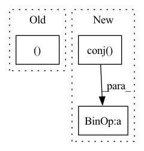

Pattern ID :14436
Before Change
def test_nplr(N=8):
A2, Lambda, p, q, V = make_NPLR_HiPPO(N)
p, q = p[:, np.newaxis], q[:, np.newaxis]
Lambda = np.diag(Lambda)
Vc = V.conj().T
A3 = V @ (Lambda - (Vc @ p) @ (Vc @ q.conj()).conj().T) @ VcAfter Change
Lambda = np.diag(Lambda)
A3 = V @ Lambda @ Vc - (p @ p.T) // Test NPLR
A4 = V @ (Lambda - pc @ pc.conj().T) @ Vc // Test DPLR
assert np.allclose(A2, A3, atol=1e-4, rtol=1e-4)
assert np.allclose(A2, A4, atol=1e-4, rtol=1e-4)
In pattern: SUPERPATTERN
Frequency: 3
Non-data size: 3
Instances Fragment ID: 47461540
Project Name: srush/annotated-s4
Commit Name: 19025c3e2db20e5c9ad79a64b32c6d650843a741
Time: 2022-06-05
Author: albertfgu@gmail.com
File Name: s4/s4.py
M Class Name: AnonimousClass
N Class Name: AnonimousClass
M Method Name: test_nplr(1)
N Method Name: test_nplr(1)
M Parent Class:
N Parent Class:
M File Name: s4/s4.py
N File Name: s4/s4.py
M Start Line: 1116
M End Line: 1121
N Start Line: 1124
N End Line: 1132
Before Change
p = Vc @ p
B = Vc @ B
return Lambda, p, B, V
// Sanity check just to make sure those identities hold,
After Change
// Lambda, V = eig(jax.device_put(S, device=jax.devices("cpu")[0]))
p = V.conj().T @ p
B = V.conj() .T @ B
return Lambda_real + 1j*Lambda_imag, p, B, V
// Sanity check just to make sure those identities hold, Fragment ID: 47461539
Project Name: srush/annotated-s4
Commit Name: 2d0d9418c9b118de5a3a72d78910f8db1ee7c451
Time: 2022-06-05
Author: albertfgu@gmail.com
File Name: s4/s4.py
M Class Name: AnonimousClass
N Class Name: AnonimousClass
M Method Name: make_DPLR_HiPPO(1)
N Method Name: make_DPLR_HiPPO(1)
M Parent Class:
N Parent Class:
M File Name: s4/s4.py
N File Name: s4/s4.py
M Start Line: 1112
M End Line: 1118
N Start Line: 1112
N End Line: 1126
Before Change
iRnn = torch.linalg.inv(iRnn)
ifc = torch.view_as_complex(ifc.unflatten(3, (self.frame_size, 2)))
if self.normalize_ifc:
ifc0 = ifc[..., -1 ]
ifc = ifc / (ifc0.unsqueeze(-1) + self.eps)
spec_f = spec_u.narrow(-2, 0, self.num_freqs)
numerator = torch.einsum("...nm,...m->...n", iRnn, ifc) // [B, C, F, N]After Change
numerator = torch.einsum("...nm,...m->...n", iRnn, ifc) // [B, C, F, N]
denumerator = torch.einsum("...n,...n->...", ifc.conj(), numerator)
// Normalize numerator
scale = ifc[..., -1, None].conj()
w = (numerator * scale / (denumerator.real.unsqueeze(-1) + self.eps)).unsqueeze(1)
spec_f = self.apply_coefs(spec_f, w)
if self.training:
spec = spec.clone() Fragment ID: 47461545
Project Name: rikorose/deepfilternet
Commit Name: 7ca1b8c890bc20c778a2292d4a6f94918ce3106c
Time: 2022-11-14
Author: Rikorose@users.noreply.github.com
File Name: DeepFilterNet/df/multiframe.py
M Class Name: MfMvdr
N Class Name: MfMvdr
M Method Name: forward(4)
N Method Name: forward(4)
M Parent Class: MultiFrameModule
N Parent Class: MultiFrameModule
M File Name: DeepFilterNet/df/multiframe.py
N File Name: DeepFilterNet/df/multiframe.py
M Start Line: 372
M End Line: 381
N Start Line: 365
N End Line: 388